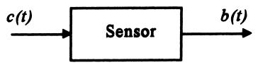
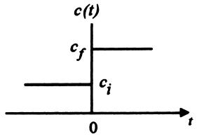
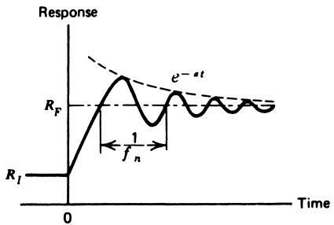
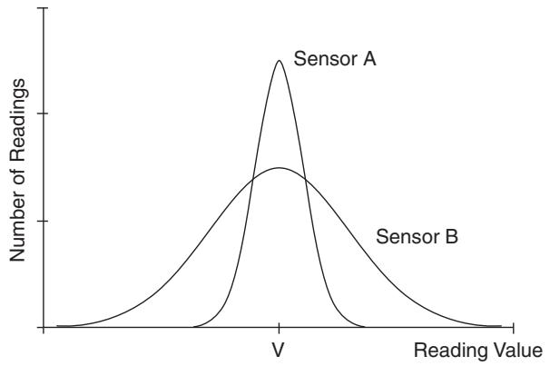

Units, Standards, and Definitions
Instrumentation 1.3
Imron Rosyadi
Learning Objectives
By the end of this session, you should be able to:
- Explain the difference between static and dynamic (time) response of a sensor.
- Describe and use the first‑order sensor time response and interpret the time constant τ.
- Recognize second‑order (oscillatory) sensor responses and the roles of natural frequency and damping.
- Apply concepts of significant figures to measurements, designs, and calculations.
- Compute and interpret arithmetic mean and standard deviation for sensor data.
- Relate standard deviation to sensor performance and the normal (bell) curve.
Static vs Dynamic Behavior of a Sensor
Static transfer function
- Relationship between input and output when the input is constant in time.
- Example:
- Thermocouple:
- Input: temperature \(T\)
- Output: voltage \(b\)
- Static transfer: \(b = K T\) (for some range).
- Thermocouple:
- Used to answer:
- “What output should I get at 41 °C when everything has settled?”
Dynamic (time) response
- How the output changes with time when the input is changing in time.
- Independent of the static transfer function.
- Often characterized by how the sensor responds to a step input change.
- Used to answer:
- “How long before the reading is close enough to the true value after a change?”
Note
The static transfer function tells you where the output will end up. The dynamic (time) response tells you how fast and in what way it gets there.
Step Response: How We Define Time Response

Concept:
- Input \(c(t)\) undergoes a step change at \(t = 0\):
- From \(c_i\) (initial value) to \(c_f\) (final value).
- Static transfer function gives:
- Before \(t=0\): output \(b_i\)
- After settling: output \(b_f\)
- Real sensor:
- Output \(b(t)\) lags and gradually transitions from \(b_i\) to \(b_f\).
Important
A step response is a standard way to characterize dynamic behavior: “If I change the input suddenly, how does the output react over time?”
7.1 First‑Order Sensor Time Response

First‑order response characteristics:
- Smooth, exponential approach from \(b_i\) to \(b_f\).
- No oscillation or overshoot.
- Described by a first‑order differential equation.
General time response for \(t \ge 0\):
\[ b(t) = b_i + (b_f - b_i)\left[1 - e^{-t/\tau}\right] \tag{7} \]
- \(b_i\): initial output (before step).
- \(b_f\): final steady‑state output.
- \(\tau\): time constant of the sensor (units: seconds).
Anatomy of the First‑Order Curve
Key properties of
\[ b(t) = b_i + (b_f - b_i)\left[1 - e^{-t/\tau}\right] \]
- At \(t = 0\):
- \(b(0) = b_i\)
- As \(t \to \infty\):
- \(b(t) \to b_f\)
- The bracket term is the fraction of total change achieved:
\[ \frac{b(t) - b_i}{b_f - b_i} = 1 - e^{-t/\tau} \tag{8} \]
Note
The dynamic model applies to the output \(b(t)\), not to the physical input \(c(t)\). The input is assumed to change instantly; the output cannot.
Time Constant τ and the 63% Rule
Set \(t = \tau\) in Equation (8):
\[ b(\tau) - b_i = (b_f - b_i)\left[1 - e^{-1}\right] \tag{9} \]
Since \(e^{-1} \approx 0.3679\):
\[ b(\tau) - b_i \approx 0.632\, (b_f - b_i) \]
Interpretation:
- At \(t = \tau\), the output has reached about 63% of the total change.
- Common alternative names for \(\tau\):
- 63% time
- response time
- e‑folding time
After 5τ, from (8):
\[ b(5\tau) - b_i \approx 0.993\, (b_f - b_i) \]
So after ≈ 5τ, the sensor output is extremely close to the final value (\(>99\%\) of the change).
Tip
Rule of thumb: for a first‑order sensor, - “1 τ to get ~63% there, - 3 τ to get ~95% there, - 5 τ to get essentially there.”
Interactive: Explore First‑Order Response
Adjust \(\tau\) and see how the response changes.
Example 15: First‑Order Temperature Sensor
A sensor measures temperature linearly with static transfer function
- \(33 \text{ mV} / {}^\circ\text{C}\)
- Time constant: \(\tau = 1.5\) s
The process temperature changes instantly from
- \(20^\circ\text{C}\) to \(41^\circ\text{C}\) at \(t = 0\)
Tasks:
- Find the sensor output at \(t = 0.75\) s.
- Find the corresponding indicated temperature.
- Compute the error in temperature relative to actual \(41^\circ\text{C}\).
Example 15: Step‑by‑Step Solution
- Compute initial and final outputs from static transfer function:
\[ \begin{aligned} b_i &= (33 \text{ mV}/{}^\circ\text{C})(20^\circ\text{C}) = 660 \text{ mV} \\ b_f &= (33 \text{ mV}/{}^\circ\text{C})(41^\circ\text{C}) = 1353 \text{ mV} \end{aligned} \]
- Apply first‑order time response at \(t = 0.75\) s:
\[ \begin{aligned} b(t) &= b_i + (b_f - b_i)\left[1 - e^{-t/\tau}\right] \\ b(0.75) &= 660 + (1353 - 660)\left[1 - e^{-0.75/1.5}\right] \\ &= 660 + 693\left[1 - e^{-0.5}\right] \\ &\approx 660 + 693\cdot(1 - 0.6065) \\ &\approx 932.7 \text{ mV} \end{aligned} \]
- Convert output back to indicated temperature:
\[ T_\text{indicated} = \frac{b(t)}{33\text{ mV}/{}^\circ\text{C}} = \frac{932.7}{33} \approx 28.3^\circ\text{C} \]
- Error relative to actual:
\[ \Delta T = T_\text{indicated} - T_\text{actual} = 28.3^\circ\text{C} - 41^\circ\text{C} = -12.7^\circ\text{C} \]
So, at 0.75 s, the sensor under‑reports by about 12.7 °C.
Warning
Time response analysis applies to the sensor output (voltage here), not to the actual process temperature.
Real‑Time Effects and Practical Guidance
- The ideal first‑order model assumes an instantaneous step in the input.
- Real processes often change more gradually → sensor lag is less severe.
- Our analysis is intentionally worst case.
Practical rule:
- A sensor can “track” variations well if the changes in the actual variable occur over times longer than about τ.
Tip
When choosing a sensor for a control loop: - Compare sensor time constant τ with the time scale of process changes. - For accurate tracking, aim for \(\tau_\text{sensor} \ll T_\text{process\_variation}\).
7.2 Second‑Order Sensor Response
Some sensors show oscillatory behavior after a step input:

Characteristics:
- Output overshoots and undershoots around the final value.
- Oscillations decay over time due to damping.
- Described by a second‑order differential equation (similar to mass‑spring‑damper, RLC circuits).
A generic damped oscillation can be written as:
\[ R(t) \propto R_0 e^{-a t} \sin(2\pi f_n t) \tag{10} \]
- \(R(t)\): sensor output component (oscillatory part).
- \(R_0\): amplitude.
- \(a\): damping constant (larger \(a\) → faster decay).
- \(f_n\): natural frequency (Hz) of oscillation.
Second‑Order Response: Role of \(f_n\) and \(a\)
Natural frequency \(f_n\)
- Period of oscillation
\[ T_n = \frac{1}{f_n} \]
- Sensor can track inputs well if input variations are slower than this period.
- If the input changes faster than \(T_n\), the output can oscillate strongly.
Damping constant \(a\)
- Determines rate at which oscillations die out.
- Amplitude decays as \(e^{-a t}\).
- After time \(t = 1/a\):
\[ e^{-a(1/a)} = e^{-1} \approx 0.37 \]
→ amplitude dropped to about 37% of original.
Note
For second‑order sensors, two time‑related parameters matter: - How fast they oscillate (\(f_n\)). - How quickly oscillations die out (\(a\)).
Section 8: Significance and Statistics
Sensors and instruments don’t just lag; they also:
- Have inherent errors (bias, noise, etc.).
- Report values with limited precision (significant figures).
- Produce readings that vary randomly (random errors).
We need methods to:
- Avoid claiming more precision than we really have (significant figures).
- Summarize and interpret multiple readings (mean and standard deviation).
8.1 Significant Figures: Why They Matter
Example: Digital meter reads 125 kΩ.
- This does not mean exactly \(125{,}000.000\ \Omega\).
- It means the resistance is closer to 125 kΩ than to 124 kΩ or 126 kΩ.
Definition: Significant figures are the digits that are actually known from a measurement or calculation.
- 125 kΩ → 3 significant figures.
- 2.21 mA → 3 significant figures.
- 5.0 V → 2 significant figures.
Important
Significant figures are about precision of the number you can justify, not about the correctness (accuracy) of that number.
Significance in Measurement vs Accuracy
When using an instrument:
- Significance: number of readable digits or divisions.
- Accuracy: how close the reading is to the true value (given as ±% of reading or ±% of full scale).
They both matter, but are not the same.
Note
A 6‑digit meter with poor accuracy can give a very precise‑looking but wrong result. A 2‑digit meter with good accuracy can give a coarse but trustworthy result.
Example 16: Current Measurement and Uncertainty
A digital multimeter measures current through a 12.5 kΩ resistor as
- \(I = 2.21\text{ mA}\) on the 10 mA scale.
- Instrument accuracy: ±0.2% of full scale (FS).
Find:
- Voltage across the resistor.
- Uncertainty in the voltage.
Example 16: Solution
- Determine significance and current uncertainty
- Reading: 2.21 mA → 3 significant figures.
- 10 mA scale, accuracy ±0.2% FS →
\[ \Delta I = 0.002 \times 10 \text{ mA} = 0.02 \text{ mA} \]
So \(I = 2.21 \pm 0.02\ \text{mA}\).
- Compute nominal voltage using Ohm’s law:
\[ V = IR = (2.21\text{ mA})(12.5\text{ k}\Omega) = 27.625 \text{ V} \]
Given 3 significant figures in I, we report:
\[ V \approx 27.6\ \text{V} \]
- Propagate uncertainty:
- Min current: 2.19 mA → \(V_\text{min} = 27.4\) V
- Max current: 2.23 mA → \(V_\text{max} = 27.9\) V
So uncertainty in V ≈ ±0.25 V, rounded to keep significance:
\[ V = 27.6 \pm 0.3\ \text{V} \]
Warning
Report both the nominal result and a reasonable uncertainty, keeping consistent significant figures.
Significance in Calculations
Rule: The result of a calculation can have no more significant figures than the least precise number used.
Example 17:
- Transfer function: \(22.4\ \text{mV}/{}^\circ\text{C}\) (3 sig figs).
- Measured voltage: \(412\ \text{mV}\) (3 sig figs).
Temperature:
\[ T = \frac{412\ \text{mV}}{22.4\ \text{mV}/{}^\circ\text{C}} = 18.392857^\circ\text{C} \]
But inputs have only 3 significant figures → answer must be:
\[ T = 18.4^\circ\text{C} \]
Note
Calculator output digits beyond the least significant input digit are not trustworthy and must be rounded off.
Design vs Measurement Significance
Design values (hypothetical, ideal):
- If a design specifies 1.1 kΩ, we treat it as exactly 1100 Ω.
- If we assign 4.7 V across it, then \(I = 4.7 / 1.1\text{k} = 4.2727272\ \text{mA}\) is okay as an exact calculation in design stage.
Measurement values (real, finite precision):
- If we measure \(R = 1.1\ \text{k}\Omega\) (2 sig figs) and \(V = 4.7\ \text{V}\) (2 sig figs),
- Report \(I \approx 4.3\ \text{mA}\) (2 sig figs).
Important
In design problems: treat specified values as exact. In measurement problems: treat given digits as the significant figures.
8.2 Statistics: Why Use Averages and Spread?
Consider many readings of the same variable:
- Each reading includes random errors.
- We want to estimate a “best value” and how spread out the readings are.
Two key tools:
- Arithmetic mean (average)
- Standard deviation (measure of spread)
Note
A single reading can be misleading. Collections of readings + statistics give a more reliable picture of the true value and sensor performance.
Arithmetic Mean
Given \(n\) measurements \(x_1, x_2, \dots, x_n\):
\[ \bar{x} = \frac{x_1 + x_2 + \cdots + x_n}{n} \tag{11} \]
Using the summation symbol:
\[ \bar{x} = \frac{\sum x_i}{n} \tag{12} \]
- \(\bar{x}\): arithmetic mean
- \(\sum x_i\): sum of all values
- \(n\): number of values
Tip
The mean is often our best estimate of the “true” value when random errors are present and no other biases are known.
Standard Deviation: Measuring Spread
Given \(n\) values \(x_1, x_2, \ldots, x_n\) with mean \(\bar{x}\):
- Compute deviations:
\[ d_i = x_i - \bar{x} \]
- Standard deviation:
\[ \sigma = \sqrt{\frac{d_1^2 + d_2^2 + \cdots + d_n^2}{n - 1}} \tag{13} \]
Or, with summation:
\[ \sigma = \sqrt{\frac{\sum d_i^2}{n - 1}} \tag{14} \]
Interpretation:
- Larger \(\sigma\) → readings are more spread out around the mean.
- Smaller \(\sigma\) → readings cluster more tightly around the mean.
Note
In experimental practice, we use \(n-1\) in the denominator (not \(n\)) to get an unbiased estimate of the population variance.
Example 18: Room Temperature Measurements
Eight temperature readings in a room:
- \(21.2^\circ\), \(25.0^\circ\), \(18.5^\circ\), \(22.1^\circ\), \(19.7^\circ\), \(27.1^\circ\), \(19.0^\circ\), \(20.0^\circ\) C
Find:
- Arithmetic mean temperature.
- Standard deviation.
Example 18: Solution
- Mean temperature using Equation (11):
\[ \bar{T} = \frac{21.2 + 25.0 + 18.5 + 22.1 + 19.7 + 27.1 + 19.0 + 20.0}{8} = 21.6^\circ\text{C} \]
- Standard deviation using Equation (13):
\[ \sigma = \sqrt{\frac{(21.2 - 21.6)^2 + (25.0 - 21.6)^2 + \cdots + (20.0 - 21.6)^2}{8 - 1}} \]
Result:
\[ \sigma = 3.04^\circ\text{C} \]
Interpretation:
- Mean room temperature ≈ 21.6 °C.
- Typical variation about mean is about 3 °C across sampled locations.
Visualizing Standard Deviation

- Both sensors measure the same true value \(V\).
- Sensor A: narrow distribution → small σ.
- Sensor B: wide distribution → large σ.
Implications:
- Any single reading from Sensor A is more likely to be close to \(V\).
- For Sensor B, readings vary more; averaging more samples may be needed to estimate \(V\).
Important
Standard deviation quantifies repeatability and noise level of sensor readings.
Normal (Gaussian) Distribution and σ
If we assume:
- Errors are truly random, and
- We have a large number of samples,
the distribution of readings often approaches a normal (bell) curve.
For a normal distribution:
- About 68% of readings lie within ±1σ of the mean.
- About 95.5% within ±2σ.
- About 99.7% within ±3σ.
Example: Mean pressure 44 psi.
- Case 1: \(\sigma = 14\) psi → 68% of readings between 30 and 58 psi.
- Case 2: \(\sigma = 3\) psi → 68% of readings between 41 and 47 psi.
Note
Smaller σ → tighter cluster → more reliable individual readings.
Example 19: Evaluating a Control System with Statistics
A system packages potato chips into 200 g bags.
Samples (15 bags) drawn before control system installed:
201, 205, 197, 185, 202, 207, 215, 220, 179, 201, 197, 221, 202, 200, 195
Samples after control system installed:
197, 202, 193, 210, 207, 195, 199, 202, 193, 195, 201, 201, 200, 189, 197
Tasks:
- Compute mean and standard deviation before and after.
- Evaluate whether the system improved performance.
Example 19: Solution and Interpretation
Using Equations (12) and (14):
Before control system:
- Mean:
\[ \bar{W}_b = 202\ \text{g} \]
- Standard deviation:
\[ \sigma_b = 11\ \text{g} \]
After control system:
- Mean:
\[ \bar{W}_a = 199\ \text{g} \]
- Standard deviation:
\[ \sigma_a = 5\ \text{g} \]
Interpretation:
- Target is 200 g.
- Mean moved from 202 g → 199 g → closer to target overall.
- Spread (σ) reduced by about a factor of 2 (11 g → 5 g).
If we use the ±3σ rule:
- Before: \(99\%\) of bags ≈ \(202 \pm 33\) g → 169 to 235 g.
- After: \(99\%\) of bags ≈ \(199 \pm 15\) g → 184 to 214 g.
So, the control system tightened the distribution and reduced systematic deviation from target.
Tip
Combining mean and standard deviation gives a richer view of system performance than either alone.
Summary / Key Points
- Static vs dynamic response
- Static transfer function: relates steady‑state output to input.
- Dynamic (time) response: describes how output changes over time after input changes.
- First‑order sensor response
- Exponential approach: \(b(t) = b_i + (b_f - b_i)(1 - e^{-t/\tau})\).
- Time constant τ:
- 1τ → ~63% of final change.
- 5τ → ~99% of final change.
- Second‑order response
- Oscillatory with damping: \(R(t) \propto R_0 e^{-a t} \sin(2\pi f_n t)\).
- Natural frequency \(f_n\) and damping constant \(a\) are sensor characteristics.
Summary / Key Points
- Significant figures
- Never claim more digits than measurement supports.
- Calculated results cannot have more significant figures than the least precise input.
- Design values vs measurement values are treated differently.
- Statistics of measurements
- Mean \(\bar{x}\): central value of readings.
- Standard deviation σ: spread of readings; quantifies repeatability/noise.
- Normal distribution:
- ~68% within ±1σ, ~95.5% within ±2σ, ~99.7% within ±3σ.
Formula Summary
First‑order sensor step response:
\[ b(t) = b_i + (b_f - b_i)\left[1 - e^{-t/\tau}\right] \tag{7} \]
Fraction of total change achieved at time \(t\):
\[ \frac{b(t) - b_i}{b_f - b_i} = 1 - e^{-t/\tau} \tag{8} \]
At \(t = \tau\):
\[ b(\tau) - b_i = (1 - e^{-1})(b_f - b_i) \approx 0.632 (b_f - b_i) \tag{9} \]
Second‑order oscillatory response component:
\[ R(t) \propto R_0 e^{-a t} \sin(2\pi f_n t) \tag{10} \]
Formula Summary
Arithmetic mean:
\[ \bar{x} = \frac{x_1 + x_2 + \cdots + x_n}{n} \tag{11} \]
or
\[ \bar{x} = \frac{\sum x_i}{n} \tag{12} \]
Standard deviation (sample):
\[ \sigma = \sqrt{\frac{d_1^2 + d_2^2 + \cdots + d_n^2}{n - 1}} \quad\text{where}\quad d_i = x_i - \bar{x} \tag{13} \]
or
\[ \sigma = \sqrt{\frac{\sum d_i^2}{n - 1}} \tag{14} \]